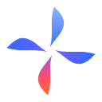

64CONSTRUCTION
48-unit grid · crescent spine + asymmetric width profile, Catmull-Rom smoothed · blade tips at 3.2 margin · pinwheel void at center · three optical masters (display / ≤32px / ≤16px).
VARIANTS
Gradient master · mono ink on light · mono white on navy, photos and brand gradients.
SIZE RAMP
16
mono
favicon
Optical small + micro masters: fuller blades, calmer swirl, bigger void.